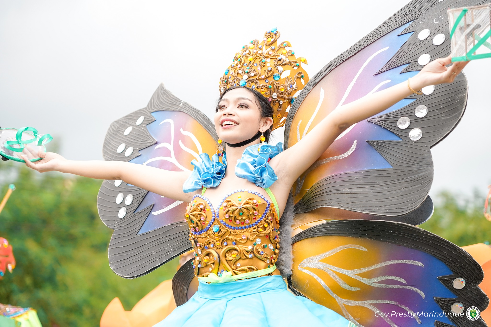
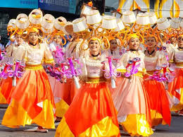

Culture & Traditions
A living culture forged from centuries of faith, artistry, hospitality, and a profound connection to land and sea.

A Culture of Faith & Art
Marinduqueno culture is a vivid tapestry woven from pre-colonial indigenous traditions, four centuries of Spanish Catholic influence, and a distinct island identity forged by geography. The result is a community where faith is performance, hospitality is ritual, and ordinary life is infused with artistic expression.
Unlike many Philippine provinces where culture is remembered rather than practiced, Marinduque's traditions remain living and participatory. The Moriones Festival is not a re-enactment staged for tourists — it is an act of genuine devotion that families prepare for year-round. The Putong ceremony is not a cultural demonstration — it is how the community actually welcomes honored guests.
This authenticity is perhaps the most remarkable thing about Marinduque's cultural life. The island's relative remoteness has helped preserve what other places have lost to modernization, making it one of the most culturally intact destinations in the Philippines.
Customs & Practices

The Moriones Festival
The defining cultural event of Marinduque — and one of the most spectacular religious festivals in Asia. Every Holy Week, communities island-wide produce and don elaborate Roman soldier costumes and hand-carved wooden masks. For an entire week they become Moriones, pursuing the biblical figure of Longinus through the streets in a dramatic public passion play.
The craft traditions surrounding the festival are equally significant: mask-making is a hereditary skill passed from parent to child. A master mask-maker may spend weeks on a single piece, carving every detail of the centurion's face from a solid block of local wood before applying meticulous oil-based paint. These masks are themselves works of art — some are preserved as family heirlooms across generations.
The festival culminates on Easter Sunday with the theatrical capture and beheading of Longinus, affirming his Christian faith in the face of death. For locals, this is not entertainment — it is an act of faith, penance, and community solidarity.

The Putong — Ceremony of Welcome
The Putong is a pre-colonial tradition that survived Christianization and colonial rule to remain a cornerstone of Marinduqueno hospitality. Its name means "to crown" — and that is precisely what happens. When an honored guest arrives, community members gather to perform a call-and-response chant in the Marinduqueno dialect, their voices weaving together in verses of prayer, thanksgiving, and blessing.
At the song's culmination, a woven palm frond headpiece is ceremonially placed on the guest's head. The message is clear and profound: you are royalty here. Every visitor is treated as someone worthy of being crowned. This tradition explains something essential about how Marinduque treats its tourists — not as revenue sources, but as honored guests in a culture of genuine welcome.

Artisanal Crafts & Food Heritage
Marinduque's artisanal traditions extend well beyond the Moriones masks. The island is the birthplace of uraro — delicate flower-shaped cookies made from locally grown arrowroot flour using hand molds passed down through generations. Each family has its own recipe subtleties, its own preferred shapes, its own secret to that particular melt-in-the-mouth texture.
Weaving, pottery, and indigenous woodcarving remain practiced arts in several barangays. Coconut-based crafts — from shell jewelry to lambanog distillation — represent a living relationship between the community and the coconut palm that has sustained island life for centuries. These are not museum crafts; they are daily practices that residents continue to depend on for livelihood and cultural identity.

Faith as Community Life
Roman Catholicism arrived with the Spanish in the 16th century and took such deep root in Marinduque that it has become inseparable from community identity. The parish church is not merely a place of worship — it is the social center, the civic anchor, and the calendar around which community life organizes itself.
Every municipality has its patron saint and its annual fiesta — a multi-day celebration of Mass, street dancing, feasting, and reunion. These fiestas are not tourist events; they are the times when the community comes together most fully, when families return from the cities, when local cooking is at its most abundant, and when the bonds of barangay life are reaffirmed. Visitors who happen to arrive during a fiesta are invariably welcomed to join.
The Butterfly Capital
Marinduque holds a distinction that surprises most visitors: it is known as the Butterfly Capital of the Philippines. The island's diverse and largely intact forest ecosystems support an extraordinary variety of butterfly species, including several endemic to the region.
The province supplies an estimated 85% of the country's butterfly exports for scientific and educational collections worldwide. Local communities have developed sustainable harvesting practices that protect wild populations while providing supplemental income for forest-adjacent barangays.
For nature-focused travelers, the forests of Marinduque offer remarkable butterfly-watching opportunities, particularly in the interior highlands of Buenavista and the forested slopes of Mount Malindig.